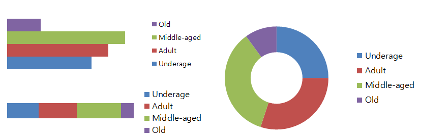
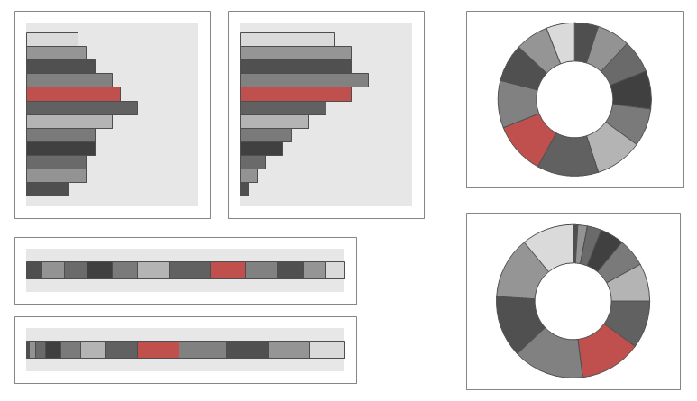
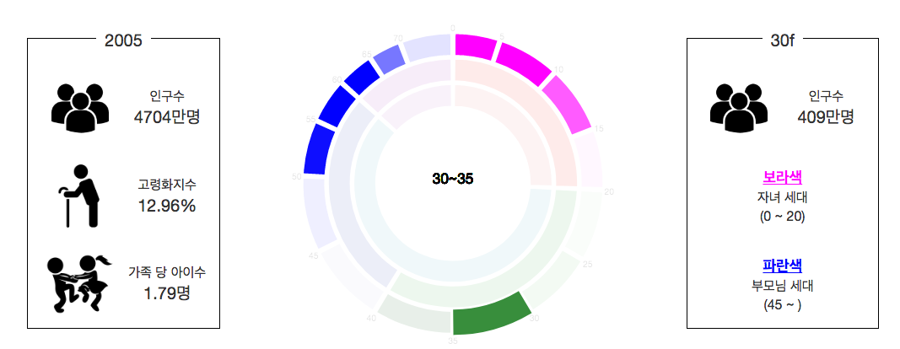
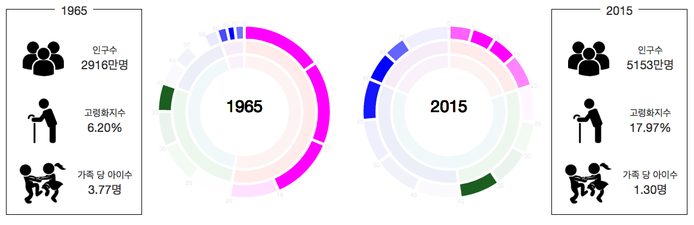

Jin-hyung Kim (CSE, 2014-12884, ID Rajin9601)
Sewon Min (CSE, 2014-19986, ID shmsw25)
1960 ~ 2010 까지의 데이터는 국내통계포털에서 총조사인구 총괄(시도/성/연령별) 로 부터 가지고 올 수 있었다. [link] 2015년도 데이터는 행정자치부의 주민등록 인구통계에서 연령별 인구현황을 통해 가져올 수 있었다. [link]
시뮬레이션을 하기 위해서는 먼저 regression이 필요하기 때문에 최대한 많은 데이터가 필요하였다. 하지만 factor 마다 데이터의 연도 범위가 달랐고, 범위의 교집합은 2001 에서 2015였다. 따라서 Simulation 용도로 필요한 데이터는 2001~2015년의 신생아 수와 가임기 여성수이다.
신생아 수는 국내통계포털에서 출생아수 및 출생성비 를 통해 알 수 있었다. [link 해당 자료는 통계청의 인구동향조사를 토대로 만들어 졌다.
가임기 여성이란 연령별 인구수로 알아낼 수 있기에 보여주는 용도로 찾은 인구수 데이터로 알아낼 수 있었다. 2015~2008년은 주민등록 인구통계로, 2007~2001은 총조사 인구 총괄에서 5년 마다 있는 데이터로 Linear Interpolation을 하였다.
국내통계포털에서 성/교육정도 별 경제활동인구 를 통해서 가지고 왔다. [link]
가계지출에서 교육비가 차지하는 비중으로 결국엔 자녀 교육비 비중과 비슷하다. 서울연구데이터서비스 에서 가져온 데이터로 1968년도부터 2008년까지의 자료를 사용하였다. [linke]
평균 초혼 연령은 국내통계포탈에서 시도별 평균초혼연령에서 얻었다. [link] 1990년부터 2016년까지의 자료를 사용하였다.
2015.06 의 값을 100으로 하였을 때, 상대적인 수치이다. 국가주요수치 사이트에서 전국 주택매매가격 변동률을 사용하였고 1986년 부터 2016의 자료를 사용하였다. [link]
맨 처음 기획에서는 네비게이션 바를 만들지 않을 생각이었다. 하지만 유저 스터디에서 첫 화면만 봐서는 해당 페이지의 의미가 한 번에 들어오지 않는다는 피드백을 받고 타이틀이 들어간 네비게이션 바를 만드는 것을 고민하였다. 네비게이션을 보통처럼 위쪽으로 하지 않고, 왼쪽으로 단 이유는 설명을 위쪽이나 아래쪽 보다 왼쪽 오른쪽에 두는 것이 좋을 것 같았고, 왼쪽이 심리적으로 안정감이 들어서 왼쪽을 선택하였다.
왼쪽 위에는 제목과 연도의 개수를 선택할 수 있도록 하였다. 연도의 개수를 Factor Graph상에서 더블클릭 같은 액션을 통해 하려고 하였으나, 더블클릭은 사람들이 알기 쉽지 않고, 클릭과 같은 하기 쉬운 동작으로는 사용자에게 방해가 될 것이라고 생각하여, 탭 형태로 두기로 결정하였다.
아이콘이 의미하는 바를 잘 모르는 것도 문제였지만, 고령화 지수나 가족 당 아이 수와 같은 단어의 의미를 설명해주기 위한 용도도 있었다.
Factor 그래프가 무엇을 하고 Simulation이 이루어지고 있다는 것을 명시적으로 나타내었다. 또한 각 Factor에 대한 정확한 용어 설명을 추가하였다.
population chart는 우선 3개의 level의 계층을 가지는 링 차트로 이루어져 있다. 3개의 level은 각각 다음과 같은 기준을 통해 나누었다.
인구문제에 대하여 다루는 기존 visualization 들은 주로 바 차트를 기초로 하는 인구 피라미드 형태이다. 예시는 이것과 이것 등이 있다. 우리는 이러한 바 차트에 비해 링 차트의 장점이 인구 문제를 강조하는 데에 필요하다고 생각하여 링 차트를 선택하였다. 우선, 절대적인 인구 수의 수치를 비교하기에는 바 차트를 보는 것이 좋은 것은 사실이나, 우리는 수치보다는 전체적인 분포를 비교하는 것을 목표로 삼았다. 따라서 사용자가 하고자 하는 task는 "청소년이 몇 퍼센트 정도를 차지하는가" 혹은 "40대가 나이가 많은 편인가 적은 편인가" 등이 될 것이라고 생각하였다. 아래 그림을 보자. 좌측 상단에 있는 바 차트는 서로 다른 연령의 인구 수를 비교하기에는 좋지만 그래서 청소년이 몇 퍼센트 정도인지, 전반적으로 노인이 몇 퍼센트 정도인지 등을 알려주지 않는다. 좌측 하단의 바 차트는 대략적으로 알려주기는 하지만, 여전히 "40대(adult와 middle-aged의 경계)가 나이가 많은 편이가 적은 편이가?" 에 대답하기는 힘들다. 우측의 링 차트는 이와 같은 task를 제일 효과적으로 할 수 있다. 또한, 두 연도에 대한 링 차트를 비교할 때에도 링 차트가 효과적이다. 아래 그림은 5살 단위로 나눈, 세부적인 연령별 분포이다. 우리는 선택된 부분이 상위 몇 퍼센트인지를 위치를 통해 손쉽게 알 수 있다. 그러나 바 차트에서는 그런 부분을 보기 어렵다.
 이제 링차트의 여러 기능에 대해서 하나씩 설명해보겠다.
먼저, 링 차트에는 3개의 계층 안쪽으로는 해당 연도를 보여주고, 바깥쪽으로는 연령대를 시곗바늘 형태로 보여준다. 처음에는 이 부분이 없었는데, 유저 스터디를 통해 해당 연도와 연령대를 알기 쉽게 하기 위한 라벨이 있으면 좋겠다는 피드백을 받아 수정하였다.
각 부분에 마우스오버를 하면 그 부분의 면적이 넓어지면서 라벨이 링 차트 중앙에 표시된다. 이러한 변화를 준 이유는 사용자에게 클릭을 할 수 있다는 피드백을 제공해주기 위함이었다. 아무런 변화가 없으면 유저가 클릭 가능하다는 것을 알지 못하였고, 변화가 너무 크면 오히려 유저가 마우스오버만으로 필요한 정보가 다 나타나는 것이라고 생각해서 클릭을 하지 않기도 하기 때문에, 현재와 같은 변화가 적절하다고 판단하였다.
클릭을 하면 다음과 같은 변화가 나타난다. 먼저 옆 사이드에 해당 연령대의 인구수가 숫자로 표시되고, 보라색은 자녀 세대, 파란색은 부모 세대를 나타낸다는 설명과 함께 각각의 연령 범위를 보여준다. 그리고 링 차트에는 자녀 세대가 보라색으로, 부모 세대가 파란색으로 색칠된다. Opacity를 통해 해당 연령과 관련된 세대의 밀도를 나타내었다. 이를 통해 사용자는 현재 선택한 세대가 어느 세대의 출산으로부터 영향을 받았는지, 그리고 어느 세대의 인구 수에 영향을 출 것인지를 볼 수 있다.
 Factor graph는 두 가지 역할을 수행하고 있다. 첫 번째는 위의 인구분포 차트의 시간을 조정하는 기능, 두 번째는 factor들의 미래 값을 조정해보는 것이다. Factor 그래프가 라인 그래프로 결정한 이유는 미래 값을 조정하였을 때, 중간 값들이 어떤 형태로 추측이 되었는지를 시각적으로 보여주기 때문이고 이미 x축이 시간이기 때문에 시간을 조정하는 기능을 Factor 그래프에 넣기로 결정하였다.
[사진 : Factor 그래프 현재 버전]Factor을 조정할 수 있게 하는 핸들이다. 단순히 선으로만 그래프가 이루어져 있으면 조정할 수 있다는 것을 모르기 때문에 조정할 수 있는 핸들을 원형으로 크게 넣었다. 이것으로 사용자는 단순히 값을 표시하는 것 이외의 역할이 있다고 인지할 것이다. 또한 축과 거리가 멀어 값을 정확히 모르겠다는 문제를 해결하기 위해서 실제 값을 넣었다.
정말 사소하지만, 초기 연도를 예전에 2000으로 하였는데, 사용자가 2000이라는 숫자를 보고 연도로 인식하지 못하였다. 따라서 초기 연도를 19xx년 으로 하여 조금 더 확실하게 연도처럼 보이도록 하였다.
원래는 핸들을 움직일 때마다 시뮬레이션을 하였지만 그 결과, 핸들을 드래그 하는데 렉이 심했다. 따라서 핸들에 대해서는 1000 / 15 ms 당 이벤트를 하나만 쏘게 만들었다. 이는 사람이 애니메이션으로 인식하는 최소 fps인 15이기에 사용한 값이다.
타임라인을 드래그 할 때, UI 상으로는 얇게 선을 그렸지만 드래그를 할 때, 얇은 선을 정확하게 클릭하기 힘들기 때문에 어느 정도 드래그를 지원하는 범위가 필요하다. 따라서 드래그를 지원하는 영역을 opacity가 있는 빨간색으로 나타내었다. 또한 현재 focusing 되어있는 값을 timeline 상에도 표시하였다.
가장 크게 깨달은 점은 visualization 고민이 얼마나 어려운지, 그리고 user study를 통해 얼마나 많은 문제들을 발견할 수 있는지였다.
어떤 task를 위해서 어떤 visualization이 좋은지 고민하는 것은 굉장히 어려운 일이었다. 덕분에 제안서를 쓰기까지만 10시간에 가까운 시간을 고민했다. 목표였던, 새로운 아이디어를 가지고 있으면서도 유용한 기능을 가지고 있고, user와 interaction을 충분히 하면서 디자인도 예쁜 visualization을 만들기 위해 노력하였고, 값진 경험이었다.
user study로 6명의 의견만 들었음에도 불구하고 많은 문제점들을 찾을 수 있었다. 일부는 다수의 공통된 의견이어서 큰 문제라는 것을 찾을 수 있었고, 반대로 상반되는 의견이 나오기도 하였다. 또한 전혀 생각지도 못햇던 문제를 발견하게 되는 계기가 되기도 하였다. user study가 HCI에서 왜 중요한지 절실히 깨닫게 되는 기회였다.